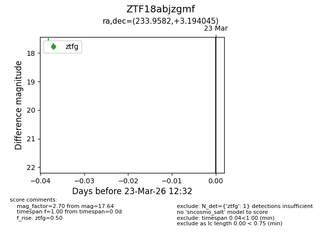
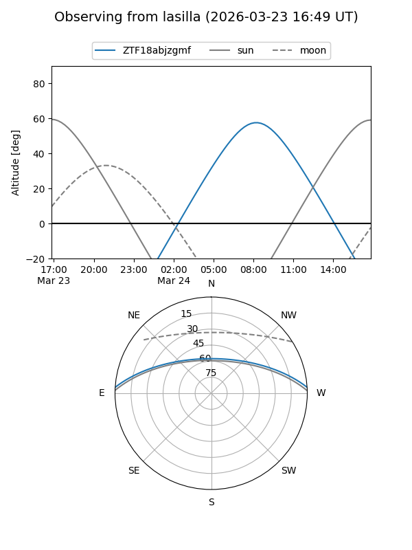
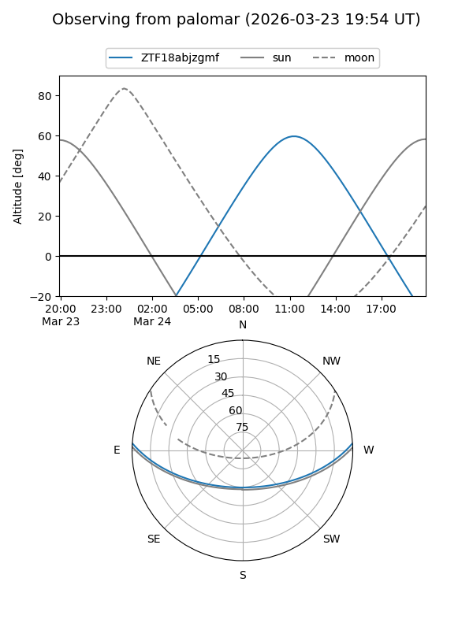

ZTF18abjzgmf
Target ZTF18abjzgmf at 2026-03-23 12:34
Aliases and brokers:
FINK: link
Lasair: link
ALeRCE: link
alt names
ZTF18abjzgmf (ztf,fink_ztf)
Coordinates:
equatorial (ra, dec) = 233.9582,+3.19405
equatorial (HMS+DMS) = 15:35:49.97,+03:11:38.56
galactic (l, b) = (8.8389,+44.03040)
Flags:
Photometry:
last ztfg=17.64
1 ztfg detections
Lightcurve

Visibility


Additional plots